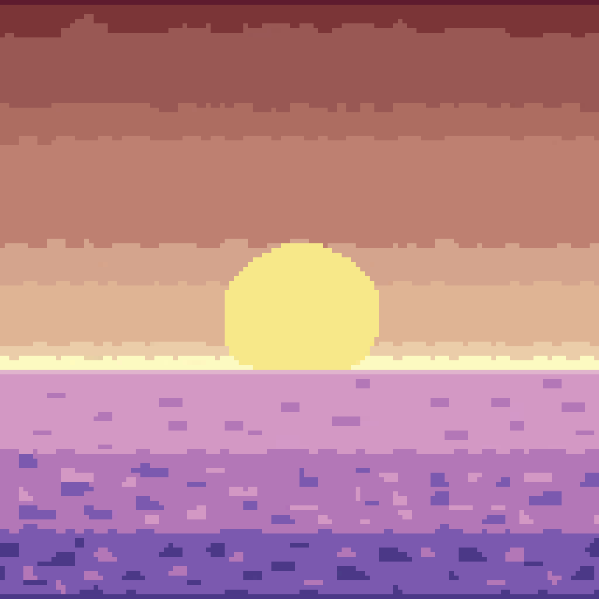

I'm Guilherme Ebersol and I'm known as Yaki Quiso on social media, I'm from 2005 borned on the South of Brazil, I quickly gained interest on computers and with time developed several hobbies such as music (since 2020) and programming (since 2022) Because of music I needed to create music videos so more people could see my creations which led me to create videos using Kdenlive (2024) and some time after using Davinci Resolve (2026), I also started to learn and practice digital 2D art on Krita and 2D animation on Moho (2026), I post all my music on music platforms since March of 2025, at that point I had already +100 songs created.